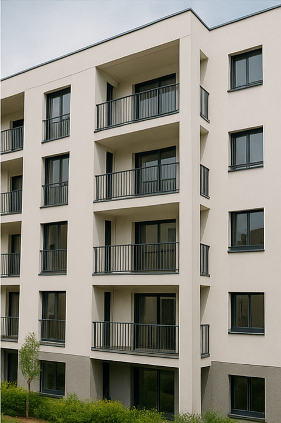

Une réponse concrète aux enjeux énergétiques
Dans un contexte de sobriété énergétique, de hausse des coûts de l’énergie et d’objectifs réglementaires ambitieux (loi Énergie-Climat, décret tertiaire, etc.), de nombreux maîtres d’ouvrage cherchent des solutions concrètes pour améliorer la performance énergétique de leurs bâtiments.
Le Contrat de Performance Énergétique (CPE) est une solution encadrée, mesurable et sécurisée. Il permet de s’engager dans une démarche de rénovation énergétique avec garantie de résultats, tout en assurant le financement et la maîtrise des risques.
Définition du CPE
Le Contrat de Performance Énergétique est un contrat engageant un prestataire (exploitant, société de services, entreprise générale, etc.) à atteindre un niveau d’économie d’énergie défini à l’avance, sur une période déterminée (souvent entre 5 et 12 ans).
Cette économie est mesurée par rapport à une situation de référence (ou « ligne de base »), et est soumise à un protocole de mesure vérifiable et reconnu, comme l’IPMVP.
En cas de non-atteinte des objectifs, le prestataire s’engage à compenser tout ou partie de l’écart.
Cadre légal et réglementaire
En France, le CPE est défini dans l’article L. 111-101 du Code de l’énergie :
« Un contrat de performance énergétique est un contrat conclu entre un maître d’ouvrage et un opérateur, dans lequel un objectif de performance énergétique est fixé, assorti de garanties de résultats. »
- ✅ Marchés publics → MPA, MPGP, marchés globaux de performance.
- ✅ Marchés privés → Baux, prestations de services, contrats clés en main.
- ✅ Partenariats → DSP, CREM, Intracting et schémas assimilés.
Les principes fondamentaux du CPE
-
Engagement sur les résultats, pas seulement sur les moyens
- Contrairement à un contrat classique de travaux ou d’exploitation, le CPE impose au titulaire un objectif mesurable.
- Ce n’est pas un engagement de moyens (comme faire des travaux), mais bien un engagement de performance énergétique.
üéØ Engagement de r√©sultatsObjectif mesurable, pas seulement des moyens. -
Partage des responsabilités et des risques
- Le prestataire prend en charge tout ou partie des risques liés à la non-performance.
- Il est incité à concevoir des solutions pérennes et à suivre attentivement les consommations.
ü§ù Risque partag√©Le prestataire prend une part de risque. -
Transparence et pilotage continu
- Le suivi est assuré par des outils de mesure, vérification et reporting réguliers.
- Le donneur d’ordre garde la main sur les données et le pilotage global.
üìà Pilotage continuMesure, v√©rification, reporting r√©guliers.
Domaines d’application du CPE
Le CPE est particulièrement adapté aux patrimoines avec des consommations d’énergie significatives, comme :
-
Les bâtiments publics Écoles, gymnases, mairies, hôpitaux
-
Le tertiaire privé Bureaux, hôtels, commerces
-
 L’industrie Process, utilités, locaux
L’industrie Process, utilités, locaux -
 Les copropriétés En rénovation globale
- La facture annuelle dépasse 30 000 à 50 000 €
- Plusieurs postes sont optimisables : chauffage, ventilation, éclairage…
- Le maître d’ouvrage veut de la visibilité long terme
Pertinent lorsque…
Quels sont les objectifs d’un CPE ?
Un CPE vise plusieurs finalités complémentaires :
- Réduction durable des consommations énergétiques
- Amélioration du confort thermique et de la qualité d’usage
- Réduction des émissions de CO₂
- Maîtrise des dépenses d’exploitation
- Valorisation du patrimoine immobilier
- Conformité avec les obligations réglementaires (décret tertiaire, etc.)
Exemples de gains concrets observés :
- Une collectivité ayant rénové 5 écoles a obtenu -32 % de consommation d’énergie finale, avec un CPE de 8 ans.
- Un groupe hôtelier a signé un CPE multi-sites garantissant -28 % sur les consommations de chauffage, ECS et ventilation.
- Une copropriété de 70 logements a combiné travaux d’enveloppe et pilotage intelligent, atteignant -40 % d’économies garanties.
Pourquoi faire un CPE et non un contrat classique ?
Objectifs
- Réduire les consommations
- Suivi des résultats
- Transfert de risque
- Financement de travaux
CPE
- ✅ Objectif chiffré et garanti
- ✅ Mesure et vérification
- ✅ Risque partagé ou délégué
- ✅ Intégré dans certains CPE
Contrat classique
- Incertain
- Limité
- Faible
- À charge du maître d’ouvrage
En résumé
Le CPE est un outil contractuel puissant, qui permet d’engager une transition énergétique sérieuse, mesurable et durable. Il transforme les promesses d’économies d’énergie en engagements concrets et vérifiables.
Besoin d’un avis pour cadrer votre CPE ?
On relit votre définition, votre ligne de base et votre protocole M&V avant contractualisation.